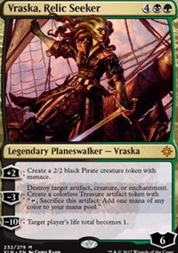
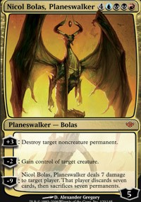
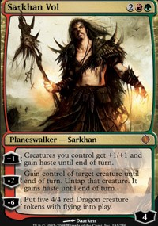

| Rarity | Current Price | Constructed Playability | Casual Playability | Overall Rating |
 |
 |
 |
|
 |
| Mythic Rare | TCG Median: $14.09 | Splashed in most popular deck in the format and key card in many other decks | Planeswalkers tend to be played in EDH more often and retain their value after rotation much better than creatures | Verdict: Keep |
Verdict: Keep This card may be expensive both in terms of mana and dollars, but shows no signs of being played less and is so far the most impressive card of Ixalan in standard. Not seeing eternal play, but as with most planeswalkers should be playable in all EDH decks in its color and will be popular among casual players even after its rotation. This card is unlikely to decline in value in the near future and shows potential for a value increase before it rotates out. |
||||
| Comparable Cards | ||||
|  |  | |||
|
Planeswalker that saw play in standard control decks, peaking at around $20.00, and has retained its value only falling to around $12.00 due to casual play |
|
Planeswalker that saw play in standard midrange decks, is a popular EDH card now and sees fringe modern play |
|